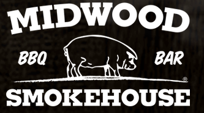
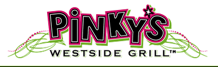
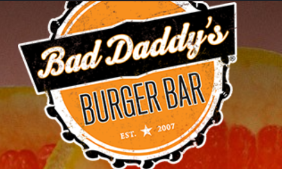

Midwood Smokehouse
Midwood Smokehouse is an American Barbecue restaurant. It has overwhelming positive reviews on TripAdvisor. It also includes many glutens free options.
Pinky's Westside Grill
Pinky’s Westside Grill is an American Bar style restaurant. There are many vegetarian and vegan friendly options. If you like loud fun restaurants this one is for you!
Bad Daddy's Burger Bar
Bad Daddy's Burger Bar is an American Bar Gastropub. There are many vegetarian and vegan friendly options. It was featured in Charlotte Magazine’s “Best of the Best” when they were covering national restaurants.
